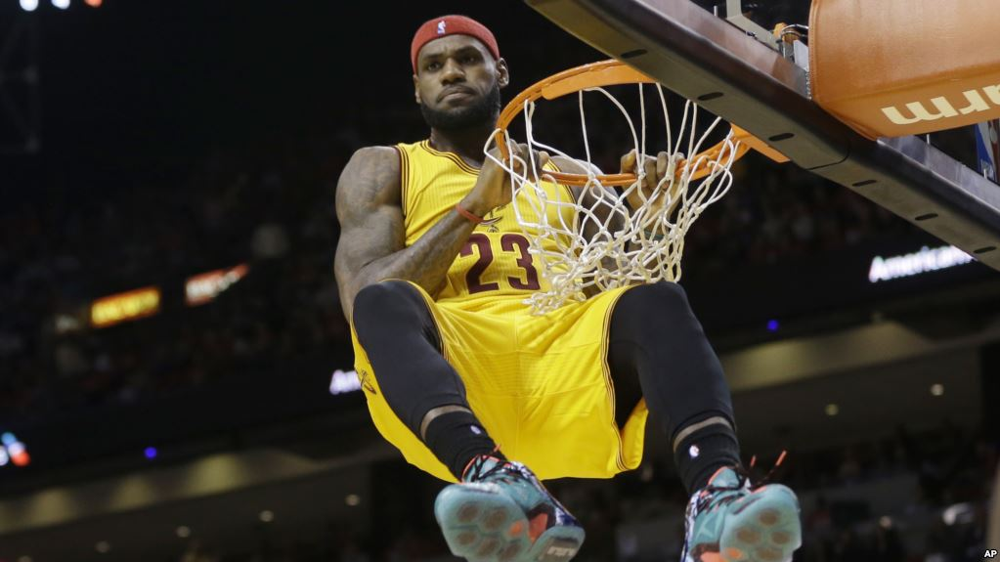

C’est une petite révolution dans l’Ohio. En effet, pour la première fois depuis le 21 octobre et la deuxième matche de la saison, Cleveland a enchaîné deux victoires de suite. Une stat qui peut faire sourire quand on connaît le standing et l’ambition des partenaires de LeBron James. Les Cavaliers retrouvent peu à peu leur jeu, mais trop de limites sont toujours affichées. Pour preuve, et même si New York se redresse, les hommes de Tyronn Lue ne se sont imposés que par trois petits points d’écarts (101-104).

Source voaafricque
LeBron James a frôlé le triple double dans cette partie, seul un rebond manque à son actif (23 points, 12 passes, 9 rebonds). Tim Hardaway Jr. a lui finit meilleur marqueur de la rencontre avec un total de 28 points. Le Français, Frank Ntilikina s’est mis en évidence en inscrivant 7 points, et en faisant 2 rebonds et 3 passes décisives en 24 minutes.
Source: Voir orginal